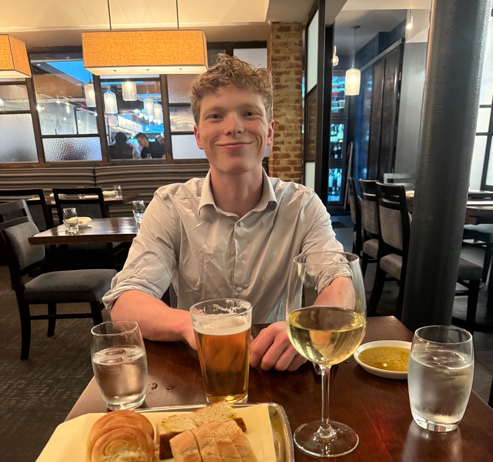

My name is Neal Dorrian, and I am currently a senior at George Mason University studying Management Information Systems (MIS).
I am also the founder of Apex Service Contracting LLC, a commercial facilities maintenance company based out of Centreville, Virginia.
We manage a wide range of general service requests including plumbing, electrical, carpentry, drywall, painting, landscaping, and more.
Our company operates as a full-service provider across North Carolina, Virginia, Maryland, Washington D.C., and West Virginia.
I am currently pursuing my degree to better understand how to integrate operational systems within my company to support growth and improve administrative efficiency and security.
Outside of school and work, I enjoy spending time with my fiancée and being outdoors, including camping, fishing, and similar activities.